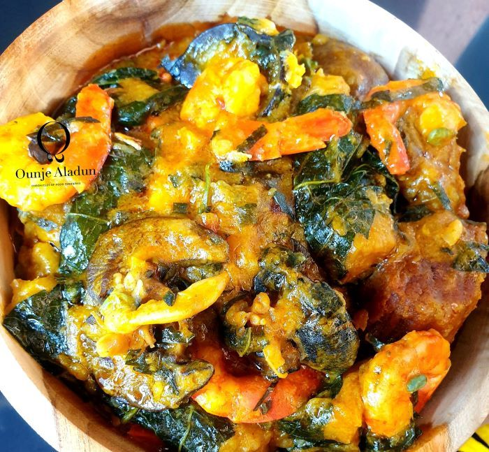

Ekpang Recipe

Ekpang
Ingredients
- 1 kg water yam
- 1.5 kg cocoyam
- Perewinkles
- leaves Ugu/green
- Beef/goatmeat
- Dry fish
- Kpomo
- Crayfish
- Palm oil
- cubes Seasoning
- Salt
- Pepper
- leaves Curry
Steps
- Peel,wash and grate or blend the coco-yam.
- Cut coco-yam leaves into small segments and wash.
-
Top and tail periwinkle, this can actually be done for you in the
market.
- Wash periwinkle thoroughly. It carries a lot of mud and sand.
-
Place periwinkle at the base of pot. Add a little palm oil ,some pepper,
salt and part of the seasoning.
-
Mix the grated coco-yam with about ½ cup of water to soften it further.
-
Using your fingers,take about a teaspoon size of the paste at a time and
wrap in the leaves placing gently in the pot. Place each wrap on the
other until all the paste is wrapped.
- Place pot on the fire and allow to heat up .
-
Add 2 cups of water from the edge of the pot a little at a time and
allow to boil up and cook slowly until set
-
Add the fish, shrimps , crabs, seasoning, pepper, utasi or ntong (scent
leaves) and a little salt.
-
Lower the heat and cook so that the Coco yam can through thoroughly .
-
Shake the pot after about 20 minutes to loosen the food and to prevent
from sticking to the base of the pot. Do not stir.
- Add remaining water and continue cooking for 10 minutes.
- Next add the crayfish and cook for another 5 minutes.
-
Add the oil ,stir (actually lifting from side to side) with wooden spoon
so the Ekpang nkwukwo is not all mushy.
- Taste and correct salt. Cook for 5 minutes.
- Serve hot